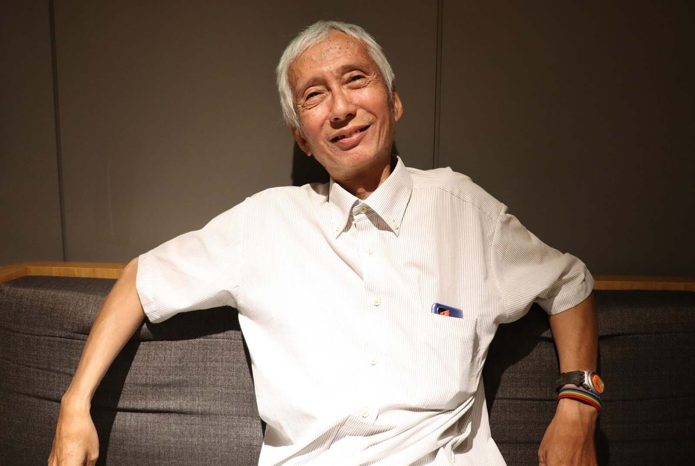

來自民眾的心聲
同志族群跟我們一般人一樣，會哭會笑，有相愛的權利，他們也會想要有個家，有個孩子陪伴，過著與平凡人相同的日常。如今同婚專法的缺失，造成他們相愛卻無法擁抱彼此，如果事情是發生在你的周圍，你有什麼樣的看法？
在表達你看法前，不如先看看別人的看法：
祁家威 ：
全世界畢竟200多個國家，已通過同婚的國家不包含台灣只有28個，算是少數，尤其是亞洲就只有台灣，因此跨國同婚是遲早要解決的議題。

攝影：吳旻諼
因為其他已通過同婚的28個國家裡面，沒有像台灣一樣必須對方國家有無通過同婚，才能登記結婚。2013年，英國通過同婚合法，一個台灣男孩在倫敦就與英國人男孩結婚了，英國並沒有問台灣同婚是否合法。
台灣是一個主權獨立的國家有自己的護照、新台幣、總統，不需要去看別的國家如何才決定自己人民的人權，所以要看別的國家同婚是否合法的這項規定是不合法的。
去年同婚通過的時候，祁家威就已經在籌畫解決跨國婚姻所遇到的困難，目前還在與政府打官司當中。
陳沺均：
希望未來大家不是只有關心跨國同志婚姻有沒有通過這件事情，而是多元性別人權都應該予以保障，他們應該在社會上沒有被差異地對待。
現在的同志婚專法應該要回歸於民法，落實跟一般人一樣的保障，現今同志專法沒有保障到的，不只是跨國同婚，還包含人工生殖、共同收養等問題，希望社會大眾可以持續關心這個議題，而不是說現在同志婚姻通過了，對同志族群有包容，就好像可以了。
（Icons made by photo3idea_studio from www.flaticon.com）
阿瑤：
對於同性婚姻這個議題一直都蠻有興趣的，認為不管是跨國同志伴侶，還是雙方都是台灣的同志伴侶，都應該要支持。
阿瑤從小身邊就有同志朋友，只是到了大學才慢慢接觸、認識。希望未來能有更多人接受，因為現在還是有很多人反感，希望大家能改變想法，因為同性戀是很正常的。
（Icons made by photo3idea_studio from www.flaticon.com）
Tim：
原本沒有在關注這個議題，之後是因為朋友的關係，才關注跨國同性婚姻，朋友與外國同志交往，當然希望朋友能夠獲得幸福，看著朋友與他的另一伴因為沒辦法結婚而導致分隔兩地的遠距離戀愛，就覺得十分難過與不捨，為甚麼相愛卻不能生活在一起呢？令他十分疑惑，但他認為現在應該要關心的是如何去修法，讓跨國婚姻能夠通過。
（Icons made by photo3idea_studio from www.flaticon.com）
看完不同人的心聲後，你又有什麼看法呢？不妨來投個票：